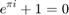

Contents
close all; fclose all; clear;
SECTION TITLE
DESCRIPTIVE TEXT

% Preprocessing step: % get and clean the data
BOLD TEXT
configuration: set file paths and define features (using a 3rd party open source fast csv reader)
set paths
rawPath = '/home/cwang/Desktop/amazonInterview/pp-complete.csv'; opPath = '/home/cwang/Desktop/amazonInterview/MatlabWork'; if ~exist(opPath, 'dir') mkdir(opPath) end % define column no of features in the raw file: lease duration (7), % property type (5), London or Not (12) nColumnLD = 7; nColumnPT = 5; nColumnLN = 12; nColumnPR = 2; nColumnDate = 3;
prepare the files:
1. The raw file a huge csv file which will take a long time to import, thus I split the file into two first: the training set with data before 2015, and the testing file with data after 2015 2. Because we only need the 7, 5, and 12 columns in the file, other data will be ignored. However, one important column is the date (column 3), to check whether the value of the property rise naturally 3. For convenient analysis, all the data will be converted to and represented by a float number
% number of columns can be detected in linux by (actually not necessary): % [status, result] = system( ['wc -l ', rawPath] ); % check whether there is header fidRaw = fopen(rawPath, 'r'); disp(fgetl(fidRaw)); fclose(fidRaw); % turns out no header % set the split point and file format of testing and training date splitDate = datenum('2015-1-1'); fFormatSpec = '%d, %d, %d, %d, %d\n'; % to sample the date build up a 4-D count matrix that count the number of % each input type: % 1. month (1995-2014: 20*12 = 240 months); 2. property type (5 types); % 3. whether london (0 or 1); 4. lease duration ( long or unlimit) indMatTrain = zeros(240, 4, 2, 2); indMatTest = zeros(12, 4, 2, 2); % 10 each train type, at least 5 maxTrainEach = 5; % minTrainEach = 2; % 10000 each year maxTrainEachYear = 400; % 20 each test type maxTestEach = 10; maxTestYear = 1000; % build date indicator vector [Y,M] = meshgrid(1995:2014, 1:12); sDatesTrain = datenum([Y(:), M(:), ones(numel(Y),1)]); dateSeriesTrain = 1:numel(sDatesTrain); sDatesTest = datenum(2015, 1:12, 1); dateSeriesTest = 1:numel(sDatesTest); % build property type indicator vector sTypes = int8(['D', 'S', 'T', 'F']); % we won't consider O as it's rarely happened typeSeries = 1:4; % build location indicator vector sLNs = logical([0, 1]); LNSeries = 1:2; % build lease duration indicator vector sLDs = int8(['F', 'L']); LDSeries = 1:2; % each time read a line in the file, at the same time sample the monthly data fidRaw = fopen(rawPath, 'r'); fidTrain = fopen([opPath, filesep, 'trainFile.csv'], 'a'); fidTest = fopen([opPath, filesep, 'testFile.csv'], 'a'); nLine = 1; nYear = 1; % 1995 while ~feof(fidRaw) disp(['line: ', num2str(nLine)]); rawLine = fgetl(fidRaw); rawLine = strsplit(rawLine, '","'); % processing price in int32 rawPrice = int32(str2double(rawLine(nColumnPR))); % data rawDate = datenum(rawLine(nColumnDate)); if (nYear <= 20 && rawDate < sDatesTrain( (nYear-1)*12 + 1 ) ) while rawDate <= sDatesTrain((nYear-1)*12 + 1) % every time skip 10000 lines until find the next year for yI = 1:100000 fgetl(fidRaw); end nLine = nLine + 100000; disp(['line: ', num2str(nLine)]) rawLine = fgetl(fidRaw); rawLine = strsplit(rawLine, '","'); rawDate = datenum(rawLine(nColumnDate)); nLine = nLine+1; disp(['line: ', num2str(nLine)]) end continue; end % property type only have D, S, T, F, O, coded to their ASCII code rawType = int8(rawLine{nColumnPT}); % location: london -> 1, others 0 rawLN = ~isempty(regexpi(rawLine{nColumnLN}, 'LONDON')); % Duration: using ASCII code rawLD = int8(rawLine{nColumnLD}); % check whether there are enough samples of this record % dateIndex indexDateTrain = min(dateSeriesTrain(sDatesTrain >= rawDate)); indexDateTest = min(dateSeriesTest(sDatesTest >= rawDate)); if nYear <= 20 yearMat = indMatTrain((nYear-1)*12+1:(nYear-1)*12+12, :, :, :); else yearMat = indMatTest; if( sum(yearMat(:)) >= maxTestYear) break end end disp(sum(yearMat(:))) if( nYear<=20 && sum(yearMat(:)) >= maxTrainEachYear) disp(['Year ', num2str(1995+nYear-1), 'got enough data. Go to next year...']); disp(['line: ', num2str(nLine)]); while rawDate <= sDatesTrain(nYear*12) % every time skip 10000 lines until find the next year for yI = 1:100000 fgetl(fidRaw); end nLine = nLine + 100000; disp(['line: ', num2str(nLine)]) rawLine = fgetl(fidRaw); rawLine = strsplit(rawLine, '","'); rawDate = datenum(rawLine(nColumnDate)); nLine = nLine+1; disp(['line: ', num2str(nLine)]) end nYear = nYear + 1; continue end % typeIndex indexType = typeSeries(sTypes == rawType); if (isempty(indexType) || numel(indexType) >= 2) nLine = nLine + 1; continue end rawType = indexType; % here convert the types to 1,2,3,4,5 % locationIndex indexLN = int8(rawLN) +1; % durationIndex indexLD = LDSeries(sLDs == rawLD); if(isempty(indexLD) || numel(indexType) >= 2) nLine = nLine + 1; continue end rawLD = indexLD; % here convert lease duration to 1,2 nLine = nLine + 1; % build up data and check the sampling status % recordClean = sprintf(fFormatSpec, [rawPrice, rawDate, rawType, rawLN, rawLD]); % check whether we've got enough samples % whether each year is reached if(min(indMatTrain(:)) >= maxTrainEach && rawDate < sDatesTest(1)) continue end if (min(indMatTest(:) >= maxTestEach)) break; end % split file if ( rawDate < splitDate) if (indMatTrain(indexDateTrain, indexType, indexLN, indexLD) >= maxTrainEach ) continue; end fprintf(fidTrain, fFormatSpec, [rawPrice, rawDate, rawType, rawLN, rawLD]); indMatTrain(indexDateTrain, indexType, indexLN, indexLD) = ... indMatTrain(indexDateTrain, indexType, indexLN, indexLD)+1; continue else if(indMatTest(indexDateTest, indexType, indexLN, indexLD) < maxTestEach) fprintf(fidTest, fFormatSpec, [rawPrice, rawDate, rawType, rawLN, rawLD]); indMatTest(indexDateTest, indexType, indexLN, indexLD) = ... indMatTest(indexDateTest, indexType, indexLN, indexLD)+1; else continue; end end end fclose(fidRaw); fclose(fidTrain); fclose(fidTest);